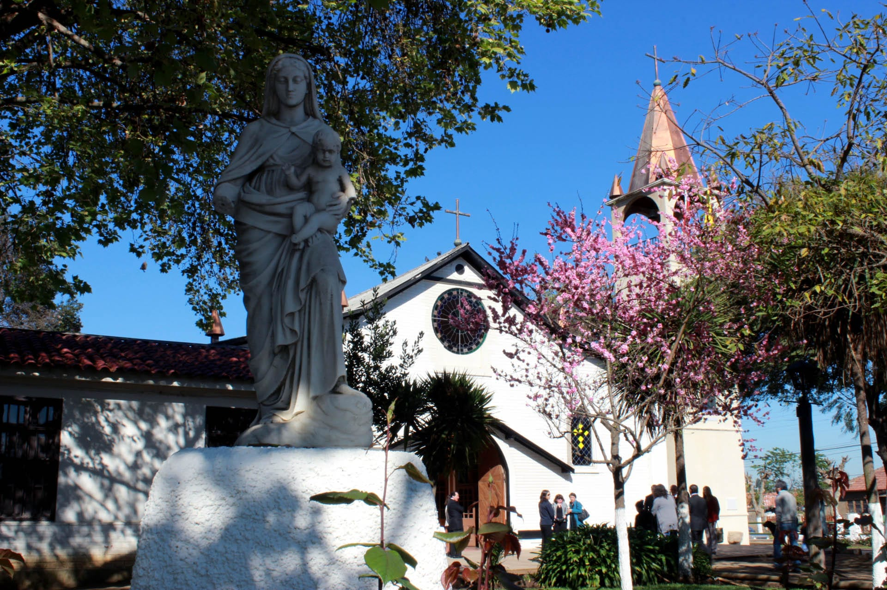
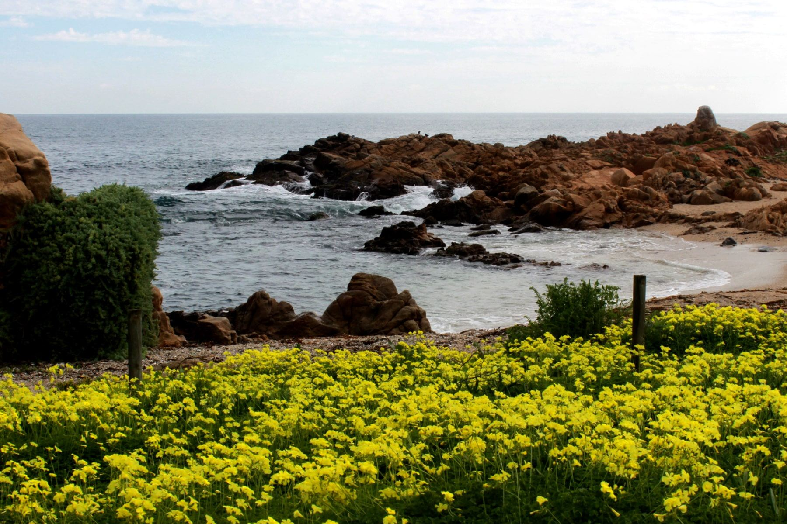
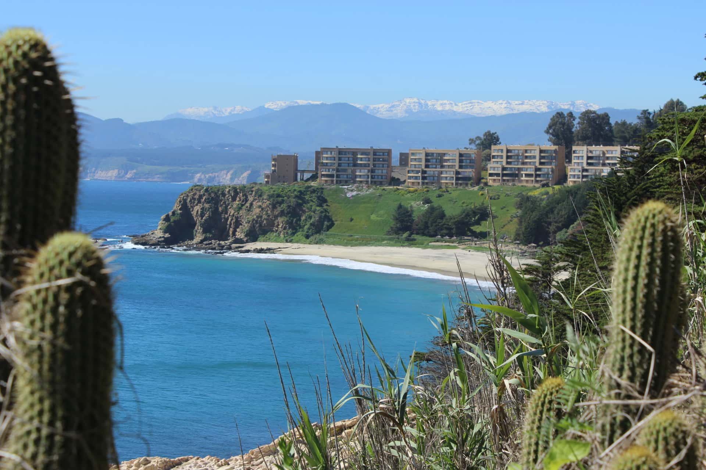
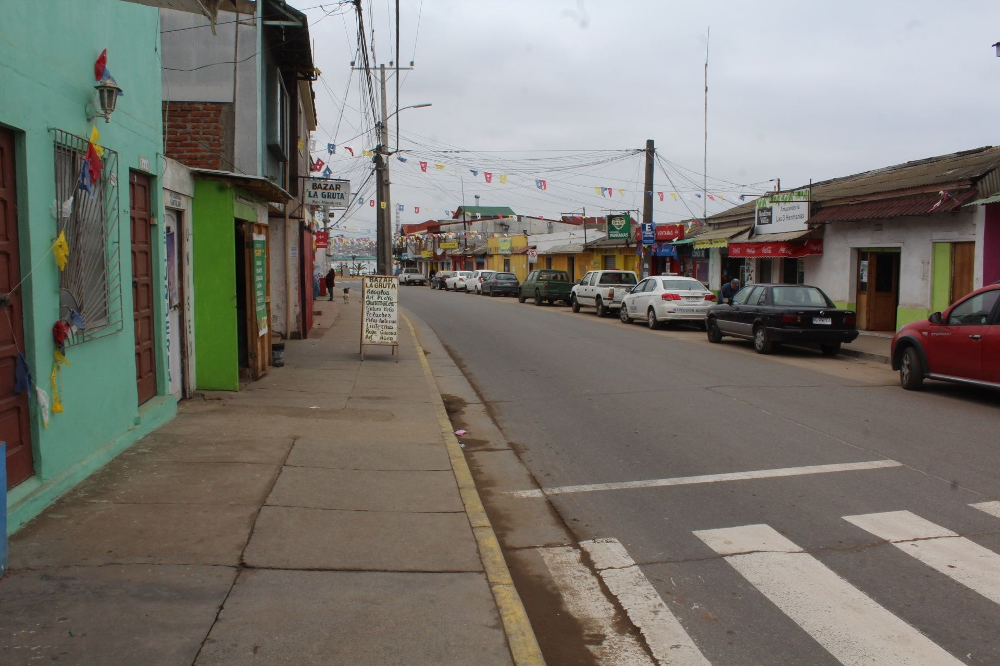
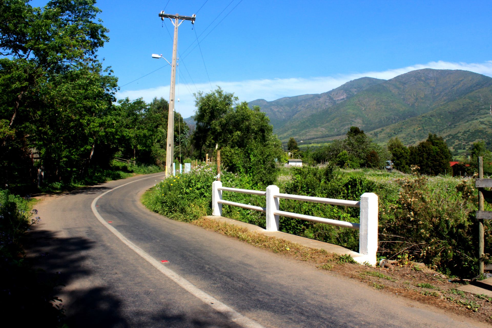

01. Visita individual al Museo
Martes a viernes: 10:00 a 13:30 y 14:30 a 17:20 horas.
Sábados: 10:00 a 13:30 horas. Festivos: cerrado.
Consultar por teléfono ↗Conoce nuestra comuna
Patrimonio, naturaleza, cultura y experiencias de la comuna de Puchuncaví.
Unidad municipal
En 2017, la unidad municipal de Turismo se integró con el Museo de Historia Natural de Puchuncaví para promover el territorio, su patrimonio y sus atractivos entre visitantes y habitantes.
Su labor contempla la creación de circuitos turísticos, colaboración con estudiantes y emprendedores, promoción de la comuna, conservación del patrimonio y organización de actividades culturales y educativas.
Durante el año desarrolla visitas al museo, recorridos por geositios, caminatas interpretativas, talleres, observación de aves y charlas relacionadas con turismo y museología.
Carlos Manzo Vegas
Participación y visitas
Martes a viernes: 10:00 a 13:30 y 14:30 a 17:20 horas.
Sábados: 10:00 a 13:30 horas. Festivos: cerrado.
Consultar por teléfono ↗Para solicitar una visita se debe indicar la fecha, el curso o el rango de edad de los participantes.
Solicitar visita por correo ↗Se realizan en fechas que la unidad comunica por sus redes sociales.
Para participar se solicitan nombre, edad y teléfono de los asistentes.
Consultar inscripciones ↗Actividad convocada en distintas fechas del año a través de las redes sociales.
Está dirigida a mayores de 15 años. Se solicita nombre, edad y teléfono para la inscripción.
Consultar inscripciones ↗Talleres dirigidos a niñas y niños de 4 a 12 años, y a personas mayores de 60 años.
Las convocatorias se publican en las redes sociales y la inscripción requiere nombre, edad y teléfono.
Consultar talleres ↗Se organiza en diferentes fechas. La información de cada convocatoria se publica en las redes sociales.
Las inscripciones pueden solicitarse indicando nombre, edad y teléfono.
Consultar inscripciones ↗Atención de lunes a viernes, de 08:30 a 13:30 y de 14:30 a 17:20 horas.
Puedes comunicarte con la oficina de Turismo y Museo mediante su teléfono o correo institucional.
Solicitar información ↗Nuestro territorio
Conoce las localidades de Puchuncaví y descubre su información turística.

Conoce la localidad de Puchuncaví y consulta sus atractivos, alojamiento y gastronomía.
Conocer localidad
Explora la información turística de Maitencillo, sus atractivos, alojamiento y gastronomía.
Conocer localidad
Descubre los atractivos de Horcón y consulta las alternativas turísticas de la localidad.
Conocer localidad
Accede a la información sobre Las Ventanas, sus atractivos y servicios turísticos.
Conocer localidad
Conoce las distintas localidades rurales de la comuna y su información territorial y turística.
Conocer localidadesDescubre nuestra comuna
Un recorrido audiovisual por nuestro territorio.
Encargado: Carlos Manzo Vegas
Teléfono: 32 279 1369
Correo: oficinaturismo.munipuchuncavi@gmail.com
Para otros datos de contacto municipal, visita nuestra página de Contacto .